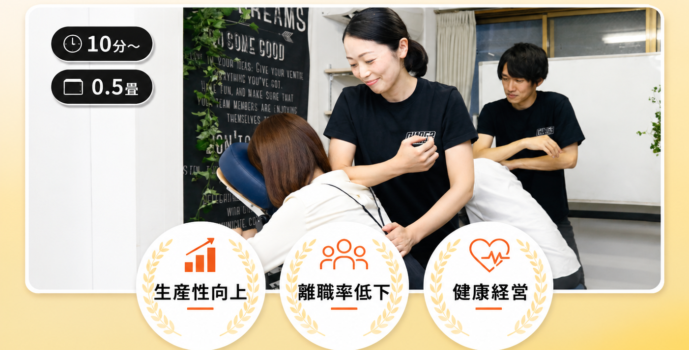
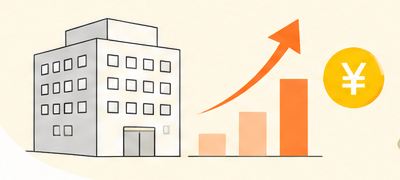
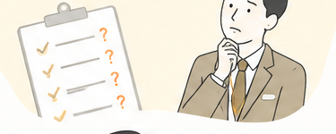
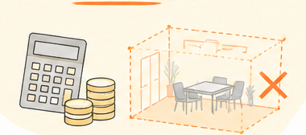
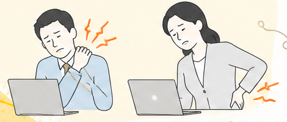
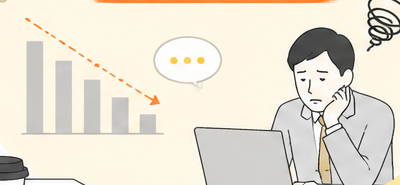
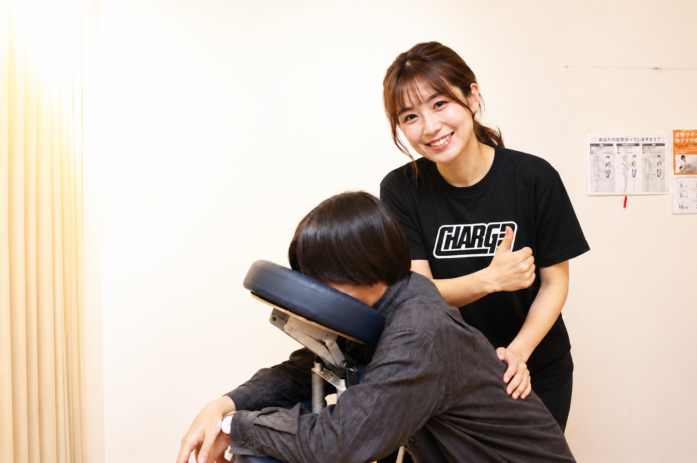

法人の人事・総務ご担当者さまへ
整体師がオフィスに出張する、法人向け出張整体サブスク

1時間11,000円〜
少ない負担で
従業員をケア
たった0.5畳
場所を選ばず
すぐ導入
1人10分〜
業務の合間に
受けられる
離職・採用コストが増えている

健康経営、何から
始めればいいか分からない

予算もスペースもない

肩こり・腰痛の
社員が多い

なんとなく
生産性が上がらない

そのお悩み、バラバラの問題に見えて、根っこは一つかもしれません。
——「従業員の身体の不調」です。
肩こり・腰痛は「未病」。誰も報告しない
集中力低下・離職の火種に
採用費・保険料・生産性低下
気づいた時にはもう、離職と経費の両方に効いています。
1人10分から、1時間で最大5名。業務への影響を最小限に、より多くの社員をケア。
会議室の隅、休憩スペースの一角でOK。専用の折りたたみチェアで、施術ルームは不要。
独自研修に合格したスタッフのみが訪問。施術実績12万人の品質を、あなたのオフィスに。
フォームまたはLINEから、30秒ほどで完了します。しつこい営業は一切ありません。
従業員数・実施頻度・設置スペースをうかがい、貴社に合った回数と時間をご提案します。オンライン相談も可能です。
契約手続きとあわせて、施術に使う折りたたみチェアをご用意。0.5畳のスペースがあれば準備は完了です。

研修に合格したスタッフが訪問。1人10分から、業務の合間に受けられます。あとは続けるだけ。
| 最低契約時間 | 3時間〜 |
| スタッフ出張費 | 1,100円/回 |
| 専用折りたたみチェア | 契約時にご購入(詳細は資料にて) |
導入の検討には、まず現状の課題整理から。貴社の規模・ご予算にあわせたシミュレーション付きの資料を、無料でお送りします。